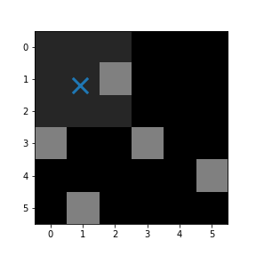

Practice 7¶
Question 1¶
Follow the steps below to create a 3 x 5 numpy array representing the following data:
Use
np.linspaceornp.arangeto create three 1 x 5 arrays[0 1 2 3 4],[0. 1.5 3. 4.5 6.]and[0 0.25 0.5 0.75 1.].Use
np.zerosto create an 5 x 3 array of zeros.Use slicing to assign each 1 x 5 array to each row of the array.
Question 2¶
Use np.sum to create:
A 1 x 3 array containing the sum of the rows
A 1 x 5 array containing the sum of the columns
of the array created in Question 1.
Question 3¶
Write a function threshold(a, x) which thresholds the array a at the value x. The array returned be the function should be the same shape as a, and True where a greater or equal to x, otherwise False.
If q1 is the array from Question 1:
z = threshold(q1, 1.5)
print(z)
[[False False True True True]
[False True True True True]
[False False False False False]]
Question 4¶
The image file sixbysix.png (download) consists of a large but faint blob in the top left, and a number of small bright pixels elsewhere. Follow the particle tracking method in the notes to find and mark the large blob, as below.
{kind=link}
Read the image into an array and reduce to greyscale
Threshold the array at a suitable value
Find all blobs in the image
Identify the largest blob
Determine the co-ordinates of the largest blob and
